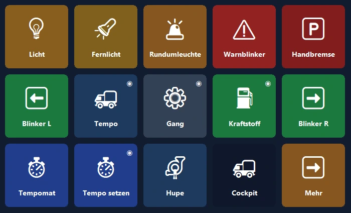
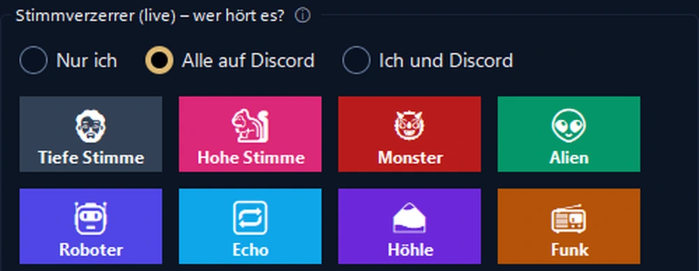

Dein Handy, das Bedienfeld deines PCs.
Shortcuts per Fingertipp, OBS, Discord, Spotify und Spiel-Cockpits. Per USB, WLAN oder mobile Daten, Ende-zu-Ende-verschlüsselt.
Das Cockpit deines Lkw, jetzt auf dem Handy.
Tempo, Drehzahl und Kraftstoff live, mit realistischen Warnleuchten. Das Handy vibriert, wenn du zu schnell fährst.
- 🚦Ein echtes CockpitTempo, Tempolimit, Drehzahl, Kraftstoff und Ankunftszeit; die Warnleuchten gehen an wie im Spiel.
- 🕹Steuerung per FingertippLicht, Feststellbremse, Tempomat; mit einem Tipp nach links oder rechts schauen.
- 📳Ohne EinrichtungBeim Spielstart bietet das Handy ein fertiges Panel an und wechselt bei jedem Start dorthin.

Steuere deinen Stream mit einer Hand.
Dein Handy statt eines teuren Geräts: OBS, Soundeffekte, Discord und Musik auf einem Bildschirm.
- 🎬OBS-SteuerungSzenen, Aufnahme und Stream, mit der Laufzeit direkt auf der Taste.
- 📳Stream-WarnungenDas Handy vibriert bei Überlastung oder verlorenen Frames.
- 🎙Live-StimmverzerrerEffekte und ein Soundboard, die deine Freunde auf Discord hören; Mikro mit einem Tipp stummschalten.

Der praktischste Bildschirm auf deinem Schreibtisch.
Starte in einer Minute mit einem fertigen Layout; die echten Logos deiner Programme kommen automatisch.
Zweiter Bildschirm
Sieh den PC-Bildschirm auf dem Handy und nutze ihn als Touch-Maus und -Tastatur.
Lautstärke pro App
Stell jedes Programm einzeln ein; Kopfhörer ↔ Lautsprecher mit einem Tipp.
Smarte Seiten
Die Seiten folgen dem Programm im Vordergrund; Timer, Ordner und mehrstufige Aktionen.
Verbindet sich von überall
Dasselbe WLAN ist nicht nötig: Es klappt auch über mobile Daten und mit mehreren PCs.
Verschlüsseltes Cloud-Backup
Dein Layout wird verschlüsselt und ohne Konto gesichert und kommt auf einem neuen PC zurück.
Datenschutz
Kein Konto, keine Werbung, kein Tracking. Deine Tasten bleiben auf deinen Geräten.
In einer Minute eingerichtet.
Programm installieren
Lade das kostenlose PanelDeck für Windows und öffne es.
QR-Code scannen
Die Handy-App koppelt sich in Sekunden per QR-Code.
Tippen
Wähle ein fertiges Layout oder baue deine eigenen Tasten.
Einmal zahlen, für immer behalten.
Kein Abo, keine Werbung, kein Tracking. Alle Updates inklusive.
Kostenlos
- Verbindung per USB, WLAN und mobile Daten
- 6 Tasten auf der ersten Seite
- Tastenkürzel, Medien, Programme öffnen, Discord, Timer
PanelDeck Pro
- 6 Tabs, unbegrenzt Ordner und Tasten
- Zweiter Bildschirm, Lautstärkeregler, Live-Infos
- Lkw-Cockpit, Vibrationswarnungen, Spielprofile
- Verschlüsseltes Cloud-Backup
Gut zu wissen
Brauche ich ein Konto?
Nein. PanelDeck fragt nach keinem Konto; deine Tasten bleiben auf deinen Geräten.
Funktioniert es auch unterwegs?
Ja. Ohne dasselbe WLAN verbindet sich das Handy über mobile Daten, Ende-zu-Ende-verschlüsselt.
Mit welchen Spielen funktioniert es?
Euro Truck Simulator 2 und American Truck Simulator werden voll unterstützt. Live-Cockpits für Renn- und Flugsimulatoren sind in der Beta.
Gibt es eine iPhone-Version?
Vorerst Android. Eine Version für iPhone und iPad ist geplant.
Und wenn Windows meldet, dass es „den PC geschützt“ hat?
Klicke auf „Weitere Informationen“ → „Trotzdem ausführen“. Details in der Installationsanleitung.
Richte dein Panel heute ein.
Starte kostenlos und wechsle zu Pro, wann du willst.
⬇ Kostenlos für Windows laden